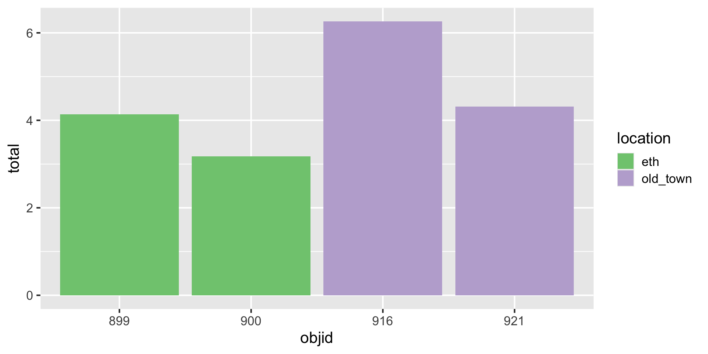
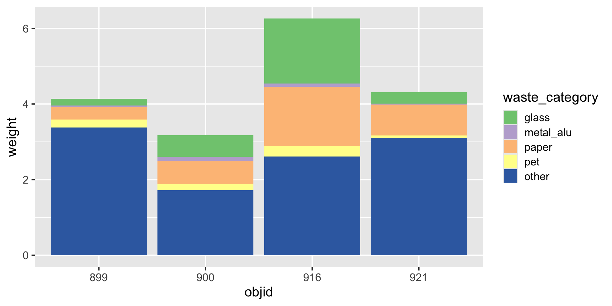

| id | job | price_glass |
|---|---|---|
| 1 | Student | 0 |
| 2 | Retired | 0 |
| 3 | Other | 0 |
| 4 | Employed | 10 |
| 5 | Employed | See comment |
| 6 | Student | 05-Oct |
| 7 | Student | 0 |
| 8 | Retired | 0 |
| 9 | Student | 10 |
| 10 | Employed | 0 |
| 11 | Employed | 20 (2chf per person with 10 people in the WG) |
| 12 | Student | 10 |
| 13 | Student | 10 |
| 14 | Employed | 0 |
| 15 | Student | 10 |
| 16 | Student | 0 |
| 17 | Employed | 5 to 10 |
| 18 | Other | 0 |
| 19 | Student | 0 |
| 20 | Employed | 10 |
| 21 | Employed | 0 |
| 22 | Employed | 5 |
Data import & Data organization in spreadsheets
ds4owd - data science for openwashdata
Lars Schöbitz
ETH Zurich
Oct 2, 2025
Exam Update
- No exam anymore in Week 8
- Due date for Capstone Project will be extended (due on 28th July)
- Capstone Project contributes 40% to grade instead of 20%
| type | percent |
|---|---|
| Homework assignments | 40 |
| Learning reflections | 20 |
| Capstone project | 40 |
Learning Objectives (for this week)
- NA
- NA
- NA
Part 1: Data types and vectors
Why care about data types?
Example: survey data
Data from: (Ben Aleya et al. 2022)
Oh why won’t you work?!
Oh why won’t you still work??!!
Take a breath and look at your data
| id | job | price_glass |
|---|---|---|
| 1 | Student | 0 |
| 2 | Retired | 0 |
| 3 | Other | 0 |
| 4 | Employed | 10 |
| 5 | Employed | See comment |
| 6 | Student | 05-Oct |
| 7 | Student | 0 |
| 8 | Retired | 0 |
| 9 | Student | 10 |
| 10 | Employed | 0 |
| 11 | Employed | 20 (2chf per person with 10 people in the WG) |
| 12 | Student | 10 |
| 13 | Student | 10 |
| 14 | Employed | 0 |
| 15 | Student | 10 |
| 16 | Student | 0 |
| 17 | Employed | 5 to 10 |
| 18 | Other | 0 |
| 19 | Student | 0 |
| 20 | Employed | 10 |
| 21 | Employed | 0 |
| 22 | Employed | 5 |
Very common data tidying step!
Very common data tidying step!
| id | job | price_glass_new | price_glass |
|---|---|---|---|
| 1 | Student | 0 | 0 |
| 2 | Retired | 0 | 0 |
| 3 | Other | 0 | 0 |
| 4 | Employed | 10 | 10 |
| 5 | Employed | NA | See comment |
| 6 | Student | 7.5 | 05-Oct |
| 7 | Student | 0 | 0 |
| 8 | Retired | 0 | 0 |
| 9 | Student | 10 | 10 |
| 10 | Employed | 0 | 0 |
| 11 | Employed | 20 | 20 (2chf per person with 10 people in the WG) |
| 12 | Student | 10 | 10 |
| 13 | Student | 10 | 10 |
| 14 | Employed | 0 | 0 |
| 15 | Student | 10 | 10 |
| 16 | Student | 0 | 0 |
| 17 | Employed | 7.5 | 5 to 10 |
| 18 | Other | 0 | 0 |
| 19 | Student | 0 | 0 |
| 20 | Employed | 10 | 10 |
| 21 | Employed | 0 | 0 |
| 22 | Employed | 5 | 5 |
Sumamrise? Argh!!!!
survey_data_small |>
mutate(price_glass_new = case_when(
price_glass == "5 to 10" ~ "7.5",
price_glass == "05-Oct" ~ "7.5",
str_detect(price_glass, pattern = "20") == TRUE ~ "20",
str_detect(price_glass, pattern = "See comment") == TRUE ~ NA_character_,
TRUE ~ price_glass
)) |>
summarise(mean_price_glass = mean(price_glass_new, na.rm = TRUE))# A tibble: 1 × 1
mean_price_glass
<dbl>
1 NAAlways respect your data types!
Taking the mean of vector with type “character” is not possible.
# A tibble: 22 × 4
id job price_glass price_glass_new
<int> <chr> <chr> <chr>
1 1 Student 0 0
2 2 Retired 0 0
3 3 Other 0 0
4 4 Employed 10 10
5 5 Employed See comment <NA>
6 6 Student 05-Oct 7.5
7 7 Student 0 0
8 8 Retired 0 0
9 9 Student 10 10
10 10 Employed 0 0
# ℹ 12 more rowsAlways respect your data types!
survey_data_small |>
mutate(price_glass_new = case_when(
price_glass == "5 to 10" ~ "7.5",
price_glass == "05-Oct" ~ "7.5",
str_detect(price_glass, pattern = "20") == TRUE ~ "20",
str_detect(price_glass, pattern = "See comment") == TRUE ~ NA_character_,
TRUE ~ price_glass
)) |>
mutate(price_glass_new = as.numeric(price_glass_new)) |>
summarise(mean_price_glass = mean(price_glass_new, na.rm = TRUE))# A tibble: 1 × 1
mean_price_glass
<dbl>
1 4.76Live Coding Exercise: Vectors
live-05a-vectors
- Head over to posit.cloud
- Open the workspace for the course ds4owd-002
- Open your “course-materials” project
- Follow along with me
Break One

10:00
Part 2: tidyr - long and wide formats
.
.
.
A grammar of data tidying

The goal of tidyr is to help you tidy your data via
- pivoting for going between wide and long data
- splitting and combining character columns
- nesting and unnesting columns
- clarifying how
NAs should be treated
Pivoting data

Waste characterisation data
| objid | location | pet | metal_alu | glass | paper | other | total |
|---|---|---|---|---|---|---|---|
| 900 | eth | 0.06 | 0.06 | 0.58 | 0.21 | 1.14 | 2.05 |
| 899 | eth | 0.14 | 0.01 | 0.18 | 0.28 | 3.04 | 3.64 |
| 921 | old_town | 0.00 | 0.00 | 0.00 | 0.41 | 1.57 | 1.99 |
| 916 | old_town | 0.17 | 0.04 | 0.80 | 0.55 | 0.62 | 2.19 |
| 900 | eth | 0.10 | 0.04 | 0.00 | 0.40 | 0.58 | 1.12 |
| 899 | eth | 0.08 | 0.03 | 0.00 | 0.05 | 0.34 | 0.50 |
| 921 | old_town | 0.08 | 0.03 | 0.30 | 0.40 | 1.52 | 2.33 |
| 916 | old_town | 0.11 | 0.04 | 0.92 | 1.01 | 1.99 | 4.07 |
How would you plot this?

Three variables
| objid | location | total |
|---|---|---|
| 900 | eth | 2.05 |
| 899 | eth | 3.64 |
| 921 | old_town | 1.99 |
| 916 | old_town | 2.19 |
| 900 | eth | 1.12 |
| 899 | eth | 0.50 |
| 921 | old_town | 2.33 |
| 916 | old_town | 4.07 |
Three variables -> three aesthetics

And how to plot this?

Reminder: Data (in wide format)
| objid | location | pet | metal_alu | glass | paper | other |
|---|---|---|---|---|---|---|
| 900 | eth | 0.06 | 0.06 | 0.58 | 0.21 | 1.14 |
| 899 | eth | 0.14 | 0.01 | 0.18 | 0.28 | 3.04 |
| 921 | old_town | 0.00 | 0.00 | 0.00 | 0.41 | 1.57 |
| 916 | old_town | 0.17 | 0.04 | 0.80 | 0.55 | 0.62 |
| 900 | eth | 0.10 | 0.04 | 0.00 | 0.40 | 0.58 |
| 899 | eth | 0.08 | 0.03 | 0.00 | 0.05 | 0.34 |
| 921 | old_town | 0.08 | 0.03 | 0.30 | 0.40 | 1.52 |
| 916 | old_town | 0.11 | 0.04 | 0.92 | 1.01 | 1.99 |
You need: A long format
| objid | location | waste_category | weight |
|---|---|---|---|
| 900 | eth | pet | 0.06 |
| 900 | eth | metal_alu | 0.06 |
| 900 | eth | glass | 0.58 |
| 900 | eth | paper | 0.21 |
| 900 | eth | other | 1.14 |
| 899 | eth | pet | 0.14 |
| 899 | eth | metal_alu | 0.01 |
| 899 | eth | glass | 0.18 |
| 899 | eth | paper | 0.28 |
| 899 | eth | other | 3.04 |
| 921 | old_town | pet | 0.00 |
| 921 | old_town | metal_alu | 0.00 |
| 921 | old_town | glass | 0.00 |
| 921 | old_town | paper | 0.41 |
| 921 | old_town | other | 1.57 |
| 916 | old_town | pet | 0.17 |
| 916 | old_town | metal_alu | 0.04 |
| 916 | old_town | glass | 0.80 |
| 916 | old_town | paper | 0.55 |
| 916 | old_town | other | 0.62 |
| 900 | eth | pet | 0.10 |
| 900 | eth | metal_alu | 0.04 |
| 900 | eth | glass | 0.00 |
| 900 | eth | paper | 0.40 |
| 900 | eth | other | 0.58 |
| 899 | eth | pet | 0.08 |
| 899 | eth | metal_alu | 0.03 |
| 899 | eth | glass | 0.00 |
| 899 | eth | paper | 0.05 |
| 899 | eth | other | 0.34 |
| 921 | old_town | pet | 0.08 |
| 921 | old_town | metal_alu | 0.03 |
| 921 | old_town | glass | 0.30 |
| 921 | old_town | paper | 0.40 |
| 921 | old_town | other | 1.52 |
| 916 | old_town | pet | 0.11 |
| 916 | old_town | metal_alu | 0.04 |
| 916 | old_town | glass | 0.92 |
| 916 | old_town | paper | 1.01 |
| 916 | old_town | other | 1.99 |
Three variables -> three aesthetics

How to
| objid | location | pet | metal_alu | glass | paper | other |
|---|---|---|---|---|---|---|
| 900 | eth | 0.06 | 0.06 | 0.58 | 0.21 | 1.14 |
| 899 | eth | 0.14 | 0.01 | 0.18 | 0.28 | 3.04 |
| 921 | old_town | 0.00 | 0.00 | 0.00 | 0.41 | 1.57 |
| 916 | old_town | 0.17 | 0.04 | 0.80 | 0.55 | 0.62 |
| 900 | eth | 0.10 | 0.04 | 0.00 | 0.40 | 0.58 |
| 899 | eth | 0.08 | 0.03 | 0.00 | 0.05 | 0.34 |
| 921 | old_town | 0.08 | 0.03 | 0.30 | 0.40 | 1.52 |
| 916 | old_town | 0.11 | 0.04 | 0.92 | 1.01 | 1.99 |
How to
| objid | location | waste_category | weight |
|---|---|---|---|
| 900 | eth | pet | 0.06 |
| 900 | eth | metal_alu | 0.06 |
| 900 | eth | glass | 0.58 |
| 900 | eth | paper | 0.21 |
| 900 | eth | other | 1.14 |
| 899 | eth | pet | 0.14 |
| 899 | eth | metal_alu | 0.01 |
| 899 | eth | glass | 0.18 |
| 899 | eth | paper | 0.28 |
| 899 | eth | other | 3.04 |
| 921 | old_town | pet | 0.00 |
| 921 | old_town | metal_alu | 0.00 |
| 921 | old_town | glass | 0.00 |
| 921 | old_town | paper | 0.41 |
| 921 | old_town | other | 1.57 |
| 916 | old_town | pet | 0.17 |
| 916 | old_town | metal_alu | 0.04 |
| 916 | old_town | glass | 0.80 |
| 916 | old_town | paper | 0.55 |
| 916 | old_town | other | 0.62 |
| 900 | eth | pet | 0.10 |
| 900 | eth | metal_alu | 0.04 |
| 900 | eth | glass | 0.00 |
| 900 | eth | paper | 0.40 |
| 900 | eth | other | 0.58 |
| 899 | eth | pet | 0.08 |
| 899 | eth | metal_alu | 0.03 |
| 899 | eth | glass | 0.00 |
| 899 | eth | paper | 0.05 |
| 899 | eth | other | 0.34 |
| 921 | old_town | pet | 0.08 |
| 921 | old_town | metal_alu | 0.03 |
| 921 | old_town | glass | 0.30 |
| 921 | old_town | paper | 0.40 |
| 921 | old_town | other | 1.52 |
| 916 | old_town | pet | 0.11 |
| 916 | old_town | metal_alu | 0.04 |
| 916 | old_town | glass | 0.92 |
| 916 | old_town | paper | 1.01 |
| 916 | old_town | other | 1.99 |
How to
| objid | location | waste_category | weight |
|---|---|---|---|
| 900 | eth | pet | 0.06 |
| 900 | eth | metal_alu | 0.06 |
| 900 | eth | glass | 0.58 |
| 900 | eth | paper | 0.21 |
| 900 | eth | other | 1.14 |
| 899 | eth | pet | 0.14 |
| 899 | eth | metal_alu | 0.01 |
| 899 | eth | glass | 0.18 |
| 899 | eth | paper | 0.28 |
| 899 | eth | other | 3.04 |
| 921 | old_town | pet | 0.00 |
| 921 | old_town | metal_alu | 0.00 |
| 921 | old_town | glass | 0.00 |
| 921 | old_town | paper | 0.41 |
| 921 | old_town | other | 1.57 |
| 916 | old_town | pet | 0.17 |
| 916 | old_town | metal_alu | 0.04 |
| 916 | old_town | glass | 0.80 |
| 916 | old_town | paper | 0.55 |
| 916 | old_town | other | 0.62 |
| 900 | eth | pet | 0.10 |
| 900 | eth | metal_alu | 0.04 |
| 900 | eth | glass | 0.00 |
| 900 | eth | paper | 0.40 |
| 900 | eth | other | 0.58 |
| 899 | eth | pet | 0.08 |
| 899 | eth | metal_alu | 0.03 |
| 899 | eth | glass | 0.00 |
| 899 | eth | paper | 0.05 |
| 899 | eth | other | 0.34 |
| 921 | old_town | pet | 0.08 |
| 921 | old_town | metal_alu | 0.03 |
| 921 | old_town | glass | 0.30 |
| 921 | old_town | paper | 0.40 |
| 921 | old_town | other | 1.52 |
| 916 | old_town | pet | 0.11 |
| 916 | old_town | metal_alu | 0.04 |
| 916 | old_town | glass | 0.92 |
| 916 | old_town | paper | 1.01 |
| 916 | old_town | other | 1.99 |
Three variables -> three aesthetics

Live Coding Exercise: Pivoting
live-05a-tidyr-pivoting
- Head over to posit.cloud
- Open the workspace for the course ds4owd-002
- Open your “course-materials” project
- Follow along with me
Homework week 5
Homework due dates
- All material on course website
- Homework assignment & learning reflection due: Friday, 7th July
Thanks! 🌻
Slides created via revealjs and Quarto: https://quarto.org/docs/presentations/revealjs/ Access slides as PDF on GitHub
All material is licensed under Creative Commons Attribution Share Alike 4.0 International.
References
Ben Aleya, Ali, Daniel Biek, Lin Boynton, Julia Jaeggi, Sebastian Camilo Loos, Chiara Meyer-Piening, Jonathan Olal Ogwang, et al. 2022. “Research Beyond the Lab, Spring Term 2022, Global Health Engineering, ETH Zurich. Raw Data and Analysis-Ready Derived Data on Waste Management in Public Spaces in Zurich, Switzerland.” Zenodo. https://doi.org/10.5281/ZENODO.7331119.